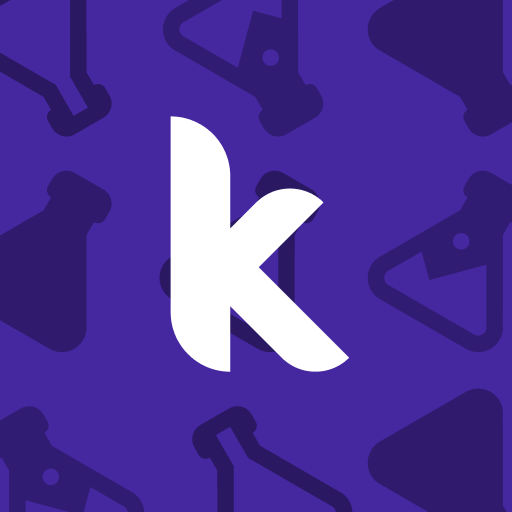

Selamat Datang di Pembelajaran RPL Interaktif 🎓
Platform belajar yang membantu kamu memahami database, pemrograman web, pembuatan aplikasi, dan logika pemrograman dengan cara interaktif. Pilih mata pelajaran untuk mulai.
Mata Pelajaran
Klik salah satu untuk membaca materi dan mengerjakan kuis interaktif.
KK1 — Database & phpMyAdmin

KK2 — Laravel 12 (Web App)
KK3 — Kotlin (Dasar Android)

MP — Kodular (No-code App)
MP — Kodular (No-code App)